の影響を評価する際に使います。指定したデータセット
の影響を評価する際に使います。指定したデータセット") に対して、多重回帰はデータセットをモデルにフィットします。
に対して、多重回帰はデータセットをモデルにフィットします。
多重線形回帰は、単純な線形回帰の拡張で、複数の独立変数が存在します。これは、従属変数yにおける複数の独立変数の影響を評価する際に使います。指定したデータセットに対して、多重回帰はデータセットをモデルにフィットします。
|
(1) |
ここで  はy切片で、パラメータ
はy切片で、パラメータ  ,
,  , ...,
, ...,  は、部分計数です。
行列形式で記述することができます。
は、部分計数です。
行列形式で記述することができます。

|
(2) |
|---|
ここで
|
,
|
 は、かつ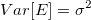における正規確率変数として、独立かつ一様に分布していると仮定します。
について、
は、かつ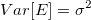における正規確率変数として、独立かつ一様に分布していると仮定します。
について、 を最小にするには、次の関数を使います。
を最小にするには、次の関数を使います。

|
(3) |
|---|
結果 は、ベクターデータ Bの最小二乗推定値値は、線形方程式の解で、次の様に表すことができます。
は、ベクターデータ Bの最小二乗推定値値は、線形方程式の解で、次の様に表すことができます。
^{-1}X^{\prime }Y")
|
(4) |
|---|
ここで、X'は、Xの転置で、与えられたXに対するYの推定値は次のようになります。
|
(5) |
(4)に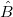を置換して、行列 を定義することができます。
を定義することができます。
|
(6) |
残差は次のように定義されます。

|
(7) |
|---|
残差平方和は、次の通りです。
|
(8) |
フィッティング処理で、それぞれの に重みを与えることができます。yEr±誤差列は、それぞれのについて重み
に重みを与えることができます。yEr±誤差列は、それぞれのについて重み として取り扱われます。yEr±が無いとき、は、全ての
として取り扱われます。yEr±が無いとき、は、全ての について1になります。
について1になります。
重み付けフィッティングのとき、解は、次のように表すことができます。
|
(9) |
ここで

エラーバーは、計算では重みとして取り扱われません。
|
(10) |

|
(11) |
|---|
固定切片は、y切片 を設定して、値を固定します。また、 固定切片のため、全ての自由度は、n*=n-1となります。
を設定して、値を固定します。また、 固定切片のため、全ての自由度は、n*=n-1となります。
sqrt(補正カイ二乗値)のスケールエラーは、重みを付けたフィットで、使用することができます。このオプションは、フィット処理で出力されるパラメータの誤差だけに影響し、フィット処理やデータには影響しません。
デフォルトで、これにはチェックが入っており、の分散 は、 パラメータ誤差の計算を考慮しているか、 あるいは、分散は、誤差計算を考慮していません。
共分散行列を例に挙げます。
は、 パラメータ誤差の計算を考慮しているか、 あるいは、分散は、誤差計算を考慮していません。
共分散行列を例に挙げます。
sqrt(補正カイ二乗値)のスケールエラー
=\sigma^2 (X^{\prime }X)^{-1}")
|
(12) |
|---|---|
sqrt(補正カイ二乗値)のスケールエラーでは無い
=(X'X)^{-1}\,\!")
|
(13) |
|---|
重み付けフィットには、の代わりに、^{-1}\,\!") を使います。
を使います。
式(4)
各パラメータにおいて、標準誤差は以下のように得られます。

|
(14) |
|---|
ここで、は、j番目の^{-1}") の対角要素です。（
の対角要素です。（^{-1}") は、重み付けフィットに使われます。）
は、重み付けフィットに使われます。） は、次式で計算される残差標準偏差です。 (「std dev」、「推定の標準誤差」、「root MSE」のようにも呼びます。)
は、次式で計算される残差標準偏差です。 (「std dev」、「推定の標準誤差」、「root MSE」のようにも呼びます。)
| 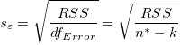 |
(15) |
|---|
 は、 の分散である
は、 の分散である の推定です。
の推定です。
| Note:自由度(df) についての詳細は、ANOVA 表をご覧ください。 |
回帰の仮定が成り立つ場合、帰無仮説と対立仮説を使用して回帰係数のt検定を実行できます。

t値は、次の式で計算できます。

|
(16) |
|---|
計算されたt値を使って、対応する帰無仮説を棄却するかどうかを決めることができます。通常、与えられたパラメータの信頼水準 について、
について、 のときは、
のときは、 を棄却できます。さらに、 p-値は より小さくなります。
を棄却できます。さらに、 p-値は より小さくなります。
t 検定の  が真である確率
が真である確率
)\,\!")
|
(17) |
|---|
ここで、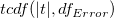 は、値|t|におけるスチューデントt分布の累積分布関数を、誤差の自由度 で計算します。
t値から各パラメータの 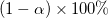 信頼区間を次式で計算することができます。
| 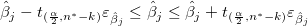 |
(18) |
|---|
ここで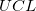と は、それぞれ上側信頼区間と下側信頼区間のことです。
は、それぞれ上側信頼区間と下側信頼区間のことです。
信頼区間の半値幅は以下の通りです。

|
(19) |
|---|
いくつかのフィット統計式をここに要約します。
（誤差）の変数に対する自由度。詳細は ANOVA表を参照してください。
|
(20) |
残差平方和。式(8)を参照。
フィットの良さは、 決定係数(COD)  で評価でき、次の式になります。
で評価でき、次の式になります。

|
(21) |
|---|
補正 は、自由度の 値を調整するのに使用されます。これは次式のように計算されます。

|
(22) |
|---|
相関係数 R値は、 の平方根を使って計算できます。

|
(23) |
|---|
誤差の平均平方の平方根または、残差標準偏差は、次式に等しくなります。
|
(24) |
RSSの平方根に等しい。

|
(25) |
|---|
The ANOVA table of linear fitting is:
| df | 平方和 | 平均平方 | F値 | Prob > F | |
|---|---|---|---|---|---|
| モデル | k | 
|

|
p-値 | |
| 誤差 | n* - k | 
|
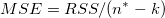 | ||
| 合計 | n* | 
|
| Note: 切片がモデルに含まれてる場合、 n*=n-1です。それ以外は、 n*=n で平方和の合計は未補正となります。 |
ここで、平方和の合計TSSは、
^2") (補正) (補正)
|
(26) |
|---|---|
 (未補正) (未補正)
|
F値で、フィットモデルがモデル「y=一定」と、有意に異なるかどうかを検定します。
また、p値、または、有意水準は、F検定と一緒に出力されます。p値が、フィットモデルがモデル「y=一定」と有意に異なっていることを意味するよりも小さい場合、帰無仮説を棄却できます。
ある値に切片を固定している場合、F検定のp値には意味が無く、切片一定としない線形多重回帰とは異なります。
不適合度を実行するには、連結フィットモードが選択されている場合に、少なくともX値がデータセット内や複数データセット内で反復できるように、反復観測、つまり、「複製データ」が必要になります。
複製データでフィットに使われている表記：
 は、データセット中のi番目のx値における、j番目の観測値です。 は、データセット中のi番目のx値における、j番目の観測値です。 |
|---|
 は、i番目のx値における全てのy値の平均です。 は、i番目のx値における全てのy値の平均です。 |
 は、i番目のx値における、j番目の観測値の予測反応です。 は、i番目のx値における、j番目の観測値の予測反応です。 |
残差平方和は、次の通りです。
^2")
|
|---|
| 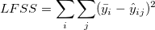 |
^2")
|
非線形フィッティングの適合度検定表：
| DF | 平方和 | 平均平方 | F Value | Prob > F | |
|---|---|---|---|---|---|
| 不適合度 | c-k-1 | LFSS | MSLF = LFSS / (c - k - 1) | MSLF / MSPE | p-value |
| 純誤差 | n - c | PESS | MSPE = PESS / (n - c) | ||
| 誤差 | n*-k | RSS |
| Note: 切片がモデルに含まれてる場合、 n*=n-1 です。それ以外は、 n*=n で平方和の合計は未補正となります。勾配が固定の場合、 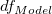= 0です。 cは、明確なx値の数を示します。切片が固定である場合、適合度検定のDFは、c-kになります。 |
多重線形回帰の共分散行列は以下によって計算されます。
=\sigma ^2(X^{\prime }X)^{-1}")
|
(27) |
|---|
2つのパラメータ間の相関は、
=\frac{Cov(\beta _i,\beta _j)}{\sqrt{Cov(\beta _i,\beta _i)}\sqrt{Cov(\beta _j,\beta _j)}}")
|
(28) |
|---|
 は、標準残差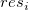から成っています。
は、標準残差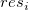から成っています。
|
(29) |
内部スチューデント化残差とも呼ばれます。
|
(30) |
外部スチューデント化残差とも呼ばれます。
| 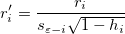 |
(31) |
|---|
スチューデント化とスチューデント化削除の残差の数式で、 は、行列 のi 番目の対角要素です。
は、行列 のi 番目の対角要素です。
^{-1}X^{\prime }")
|
(32) |
|---|
は、分散がi番目を除いた全てのポイントに基づいて計算されていることを意味します。
多重回帰では、独立変数と1つの従属変数間の関係を調べるために部分回帰プロットを使うことができます。プロットでは、Yの偏残差がXの偏残差または切片に対してプロットされます。特定の変数の偏残差は、その変数がモデルで省略された回帰残差です。
モデル を例にとると、 に対する偏回帰プロットは、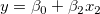 の回帰残差を
に対する偏回帰プロットは、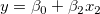 の回帰残差を  の残差に対してプロットすることで作成されます。
の残差に対してプロットすることで作成されます。
作図するには、標準、正規化、スチューデント化、スチューデント化残差から1つの残差タイプを選択します。
残差散布図 vs.独立変数
vs.独立変数 では、それぞれのプロットは別のグラフに配置されます。
では、それぞれのプロットは別のグラフに配置されます。
残差散布図 vs. フィット結果
vs. 順番
残差のヒストグラム
残差 vs. ラグ残差}")
残差の正規確率プロットは、分散が正規分布しているかどうかを調べるのに使用します。結果のプロットはおおよそ線形で、誤差範囲は正規分布していると仮定することができます。プロットはパーセンタイル対順序化された残差をベースにしており、パーセンタイルは次のように仮定されます。
}{(n+\frac{1}{4})}")
ここで、n はデータセットの合計数で、i はi 番目のデータです。なお、正規確率プロットとQ-Qプロットについてをご覧ください。

 ,
,